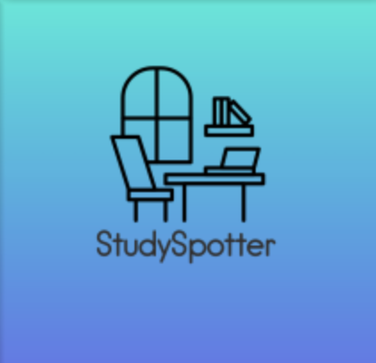

StudySpotter
Anita, Hani, and Jamie
Logo Design
The StudySpotter logo captures the essence of a dedicated study space. The design features a chair and a desk by a window, representing tranquility, focus, and the pursuit of knowledge. The gradient hues in the background are reminiscent of the calming transition from dusk to dawn, fostering creativity and concentration. The modern typeface suggests a contemporary, digital-friendly platform suitable for today's learners. Overall, the design aims to resonate with individuals seeking a harmonious environment to study and thrive.
Logo Variations
Given the versatile nature of branding and mediums where the logo can be presented, various logo versions have been crafted. This includes:
Black and White Logo
Ensures versatility across mediums where color may not be optimal.
Greyscale Logo
Perfect for situations where a toned-down version of the logo is needed without the vibrancy of full color.
Full-color Logo (Vertical Version)
The standard representation capturing the brand's essence and ideal for compact or vertical spaces.
Full-color Logo (Horizontal Version)
The standard representation capturing the brand's essence and adaptable for wider spaces or banner-like placements.